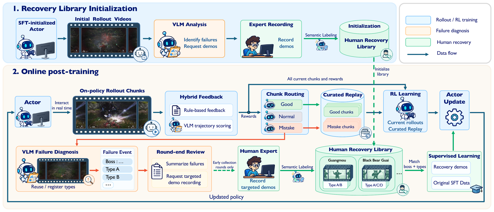

Framework

VLM diagnosis of initial rollouts guides the collection of targeted human recovery demonstrations. Online post-training combines rollout feedback, curated replay, and supervised learning from demonstrations, with recurring failures guiding recovery-data retrieval and further collection in the early rounds.
Quantitative results
Native Chapter-1 attributes · 20 episodes per method per boss.
Same trained checkpoint in both configurations.
Results across all seven bosses
CombatVLA benchmark
Win rate (%) compared with published CombatVLA results.
Black Myth: Wukong
Sekiro: Shadows Die Twice
CombatVLA: 10 trials per task with inference-time pauses. Ours: 20 episodes with continuous gameplay. Wandering Wight and Guangzhi use matched Attack 100 / Defense 600; other tasks retain their respective evaluation configurations. Ours uses no Sekiro-specific training.